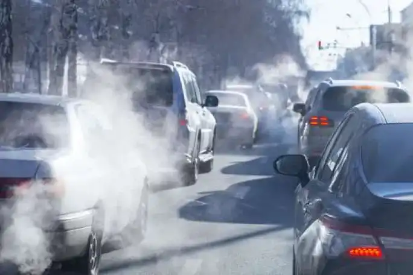

La pollution dû aux voyages
Une vie paisible
Voyager est une partie importante de notre vie quotidienne. Cependant, voyager peut causer de graves problèmes de santé si l'environnement est pollué par des véhicules à moteur, des avions et des navires. Certains des effets de la pollution de l'air sont les maladies pulmonaires, les crises cardiaques, le cancer du poumon et la mort prématurée . La façon de réduire la pollution des voyages est de réduire le nombre de véhicules à moteur sur la route et de réduire le nombre de personnes qui voyagent. La meilleure façon de réduire la pollution atmosphérique personnelle est de mener une vie saine. Ainsi, vous n'aurez plus à vous soucier de l'air nocif pendant votre voyage.
Les gros pollueurs
La pollution de l'air cause de graves problèmes de santé. Les véhicules à moteur produisent le plus de pollution atmosphérique, suivis des navires, puis des avions. L'air que nous respirons est contaminé par des particules. Ces polluants voyagent dans l'air et se logent dans nos poumons, provoquant des maladies comme le cancer du poumon et les maladies cardiaques. De nombreuses habitudes de vie contribuent à la pollution des voyages ; les habitudes alimentaires et de vie malsaines créent davantage de problèmes de santé pour les voyageurs. Il s'agit notamment de fumer sur la route, de manger des aliments épicés et de boire de l'alcool, et de ne pas faire suffisamment d'exercice ou de dormir.
Prise de conscience humanitaires
Réduire la pollution des voyages est difficile car la plupart des gens voyagent fréquemment. Cependant, il existe des moyens de réduire la pollution de l'air lorsque vous voyagez. Tout d'abord, décidez du nombre de véhicules à moteur que vous aimeriez avoir dans votre foyer lorsque vous voyagez. Ensuite, assurez-vous que tous les membres de votre famille possèdent un vélo ou un scooter pour de courts trajets en ville. Cela réduit votre propre circulation automobile tout en garantissant que tout le monde peut voyager confortablement et en toute sécurité. Pour les longs trajets, choisissez des trains ou des voitures qui permettent de se garer à distance de l'échappement du moteur. Après avoir choisi les véhicules à utiliser en voyage, envisagez de réduire les habitudes de vie malsaines en voyage.